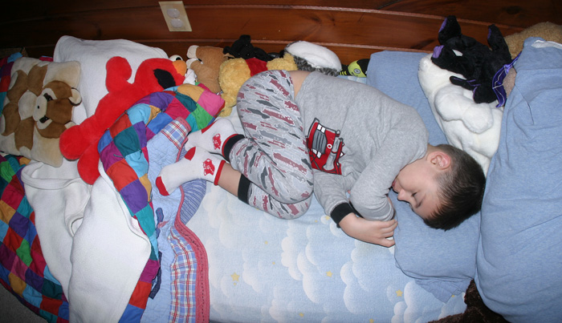

|  |
|---|
|
Did you dare to dream the Red Sox could really do it again?
Moments after Game 4 of Boston's World Series sweep of the Colorado Rockies
|
|
As in 2004, we waited for the first do-or-die game in the ALCS series to don the socks.
This time it was Game 5 against the Indians. Yes, he wore them every game night until the end of the season. The Red Sox are now 15-0 in post season play on nights when Gryffin has worn these socks to bed. Return |